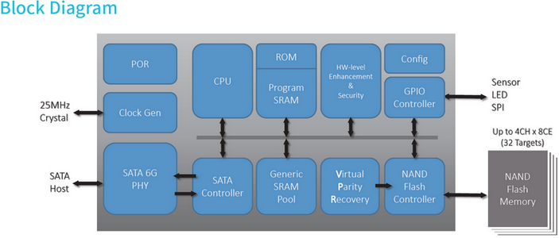

Контроллер Maxiotek MK8115 с поддержкой интерфейса SATA 3.2 является четырёхканальным и поддерживает различные типы микросхем флеш-памяти: SLC, MLC, 3D MLC и 3D TLC с интерфейсами Async, Toggle или ONFi.
Торговая марка Maxiotek практически неизвестна массовому потребителю. Но ничего удивительного в этом нет: это имя совсем недавно появившейся компании-разработчика контроллеров для устройств хранения данных на базе флеш-памяти, и в массовых продуктах ее решения практически не встречаются.

Но именно такие компании часто привлекают производителей – неизвестность вынуждает разработчиков продавать свои идеи по минимальной цене. И в сумме (при условии адекватной работоспособности) у производителя конечного устройства есть возможность минимизировать себестоимость производства и тем самым либо максимизировать прибыль, либо выпустить устройство с более низкой ценой.